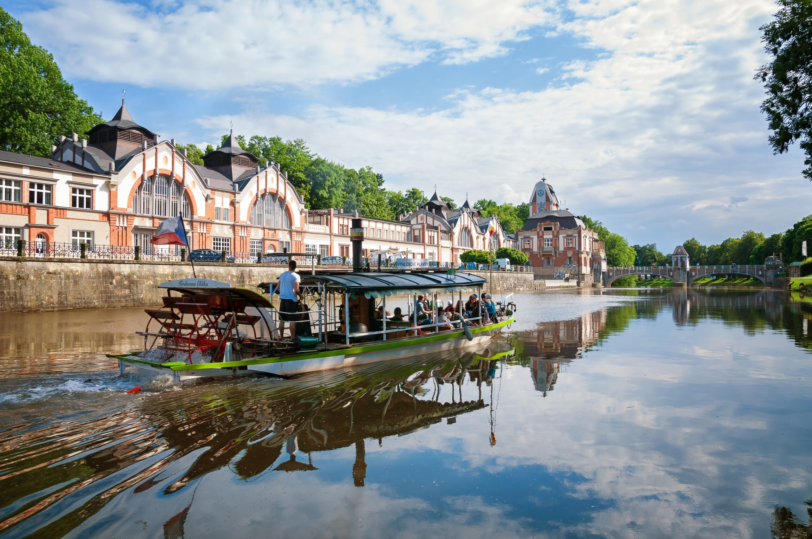
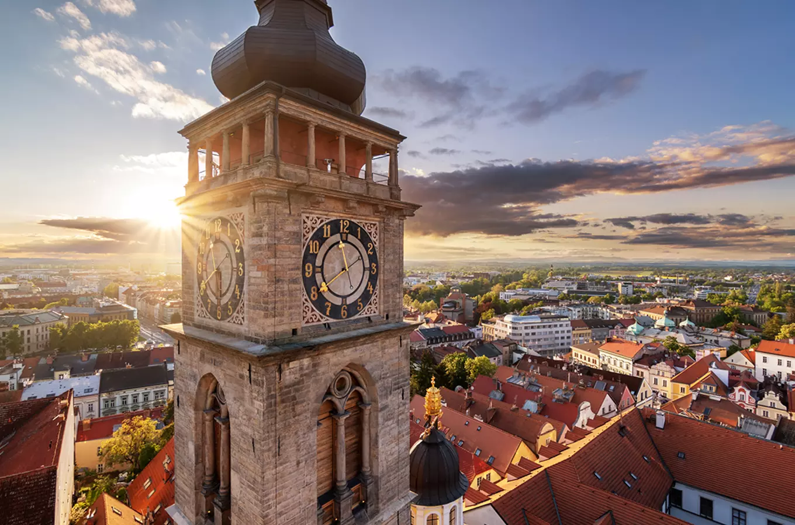
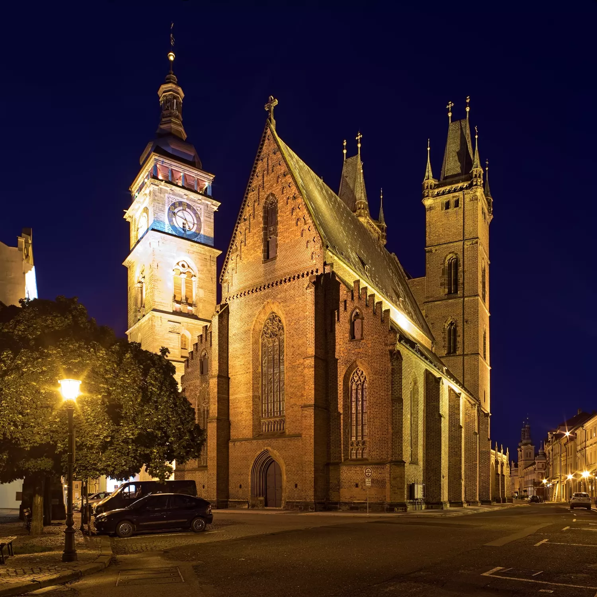
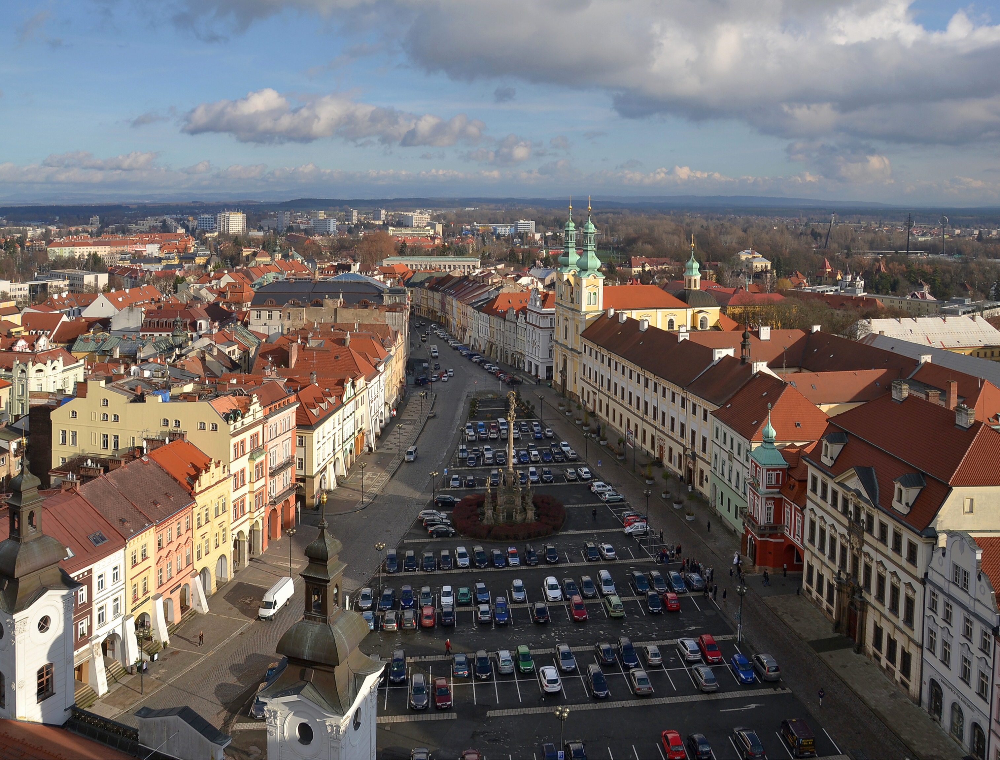

Discover a historic city known for its beautiful architecture, impressive landmarks and unique blend of medieval heritage and modern design.
Hradec Králové is a historic city in eastern Bohemia and the capital of the Hradec Králové Region. It is one of the oldest Czech cities and has played an important role in the country's history for centuries.
The city is famous for its impressive architecture, combining medieval landmarks with modern buildings from the 20th century. Thanks to architects such as Josef Gočár, Hradec Králové became known as the "Salon of the Republic".
Hradec Králové Region
Czechia
Modern architecture and historic landmarks
Salon of the Republic
The White Tower is one of the most recognizable landmarks in Hradec Králové. Standing next to the Cathedral of the Holy Spirit on Great Square, it dominates the historic centre.
Built in the 16th century, the tower is known for its Renaissance architecture and large clock. Visitors can climb to the top and enjoy panoramic views of the city and its surroundings.

The Cathedral of the Holy Spirit is one of the most important Gothic landmarks in Hradec Králové. It stands on Great Square next to the White Tower and has been a central part of the city's historic centre for centuries.
The cathedral was built in the 14th century and is known for its impressive brick Gothic architecture. Its two towers and distinctive interior make it one of the most recognizable buildings in the city.

Great Square is the historic heart of Hradec Králové. It is surrounded by colourful historic buildings, cafés and important landmarks, including the White Tower and the Cathedral of the Holy Spirit.
The square has been an important centre of city life for centuries. Today, it remains a popular place for visitors to explore the city's architecture, enjoy local cafés and experience its historic atmosphere.

Approx. 93,000 residents
Approx. 106 km²
1225
Elbe River